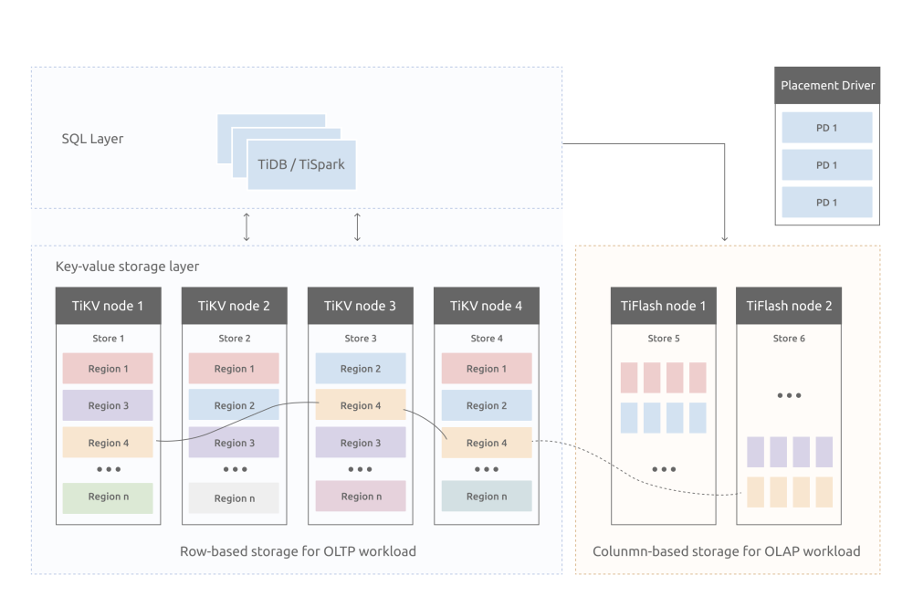
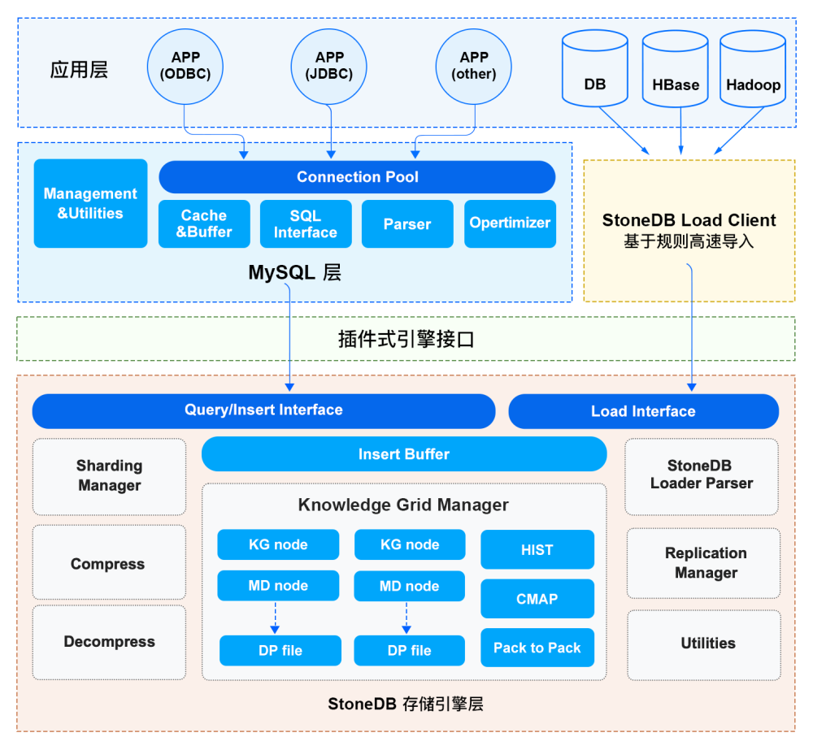
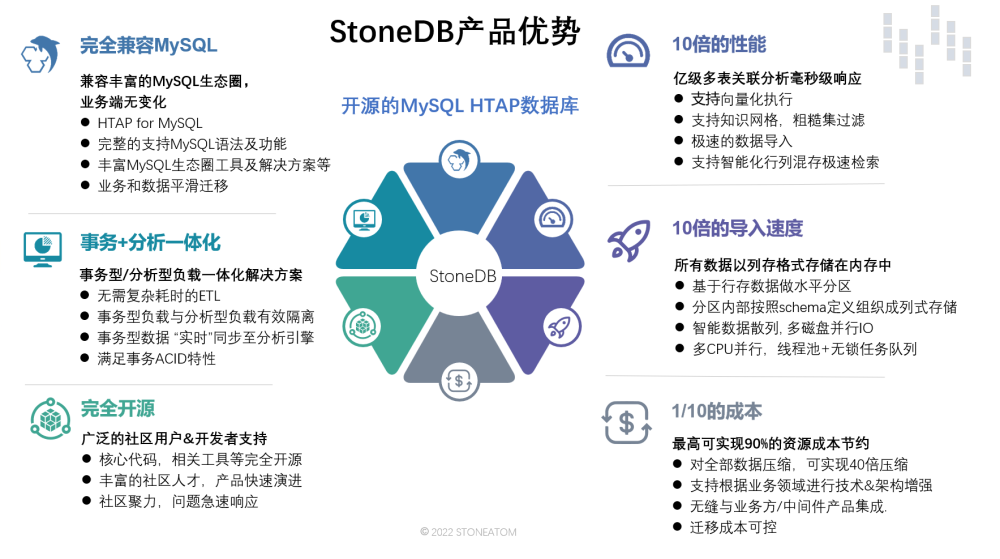
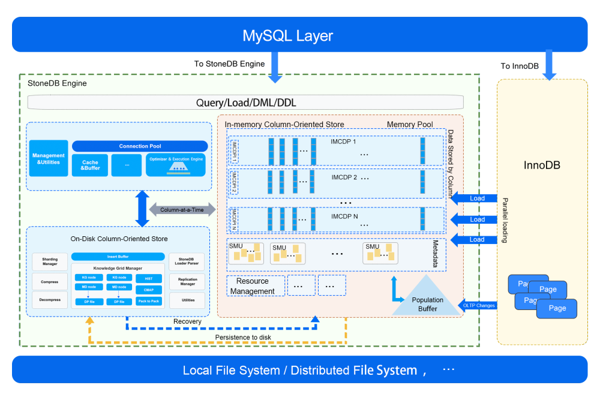

本文首发于 2022-07-06 09:10:34
推荐语
本文为数据库圈内好友高日耀首发于“CSDN 微信公众号”的文章。
最近几年基于 PostgreSQL 开发的国产数据库如雨后春笋般涌现，而受限于 MySQL 的 GPL Licence（感兴趣的可移步我的博文《技术分享 | 如何为你的代码选择一个合适的开源协议？》），二次开发必须开源，这导致基于 MySQL 开发的国产数据库相对较少（比如：万里开源的 GreatSQL），因此，当听说 StoneDB 开源的消息时，我个人还是很兴奋的。
废话不多说，以下为正文。
前言
众所周知，MySQL 是世界上最流行的 OLTP 数据库之一，截至 2022 年它在整个数据库行业的市场占有率达到了 43.04%（数据来源：Slintel 网站）。许多企业将各种业务系统应用于 MySQL 上。然而，随着企业数据量的不断增加，除了在线业务逻辑的读写，数据库还要面对日益复杂的分析性业务需求，比如 BI 报表、可视化、大数据应用等。而 MySQL 原生的架构（基于流式迭代器模型 Volcano Iterator 的执行引擎，没有利用现代多核 CPU 并行处理能力，按行存储的存储引擎）在 AP 场景中存在天然的缺陷。针对这种情况，为了补足 MySQL 的 AP 能力缺陷，业内围绕 MySQL 做了很多解决方案。主要是围绕 MySQL 搭建的异构 HTAP 数据库系统。
什么是 HTAP ？在 2014 年，Gartner 给出了 HTAP 的严格定义，其目的是为了打破，事务型负载和分析型负载之间的“壁垒”, 使系统能够支持更多的“数据”在两个系统之间流动，以及以这些数据为基础的 “实时业务”的决策。
传统架构形式下，为了解决同时处理 TP 负载和 AP 负载的问题，通常采用一套 TP 系统加上一套 AP 系统的方式，TP 和 AP 之间通过 ETL 的方式进行数据同步的来满足业务对实时性的需求，这也是当前业界搭建 HTAP 的主流方案。
业内围绕 MySQL 搭建 HTAP 主流方案
我们先来看看业界主流的基于 MySQL 的 HTAP 解决方案。
1. MySQL + Hadoop
借助 Hadoop 体系，将 MySQL 的业务数据，通过 ETL 工具同步至开源大数据系统（如 Hive，Hadoop，Spark 等）搭建的数据仓库，再基于该数仓做数据分析。

2. MySQL + 数据湖
借助数据湖平台，通过 ETL 工具将 MySQL 数据同步至数据湖，再基于数据湖进行数据、报表、BI 等分析。

3. MySQL + ClickHouse/Greenplum
通过 ETL 等数据迁移工具将 MySQL 数据迁移到 ClickHouse/Greenplum 做分析。
ClickHouse 官方在 20 年下半年发布了社区版 MaterializeMySQL 引擎 ，可以将 ClickHouse 作为 MySQL 的一个从库同步主节点数据，除了 ETL 工具，业内也有直接将 ClickHouse 作为一个 MySQL 从库直接挂载的方案。

4. 基于多副本的 Divergent Design
比如兼容 MySQL 协议的 TiDB，在一个 Raft Group 其中一个副本上，通过自研列式存储 (TiFlash) 来响应复杂 AP 查询，并通过 TiDB 的智能路由功能来自动选取数据源，实现一套分布式 HTAP 数据库系统，在分布式领域这块做的是比较好的。

以上方案存在的问题
以上几种 HTAP 解决方案，虽然是行业内的主流，但依然存在着一些问题，包括：
- 系统架构过重，运维复杂度较高；
- TP 数据通过 ETL 方式同步到 AP 系统中，数据延时较大，难以满足服务对分析的实时性要求；
- 异构数据库组合，技术上需要维护两套数据库系统，涉及到众多技术栈，对技术人员要求较高；
- NewSQL 系统，需要进行各种兼容性适配，适配工作会比较复杂，对技术人员要求也比较高。
为此，我们带来了在 HTAP 方面的解决方案：StoneDB，一款开源的一体化实时 HTAP 数据库。
StoneDB：完全兼容 MySQL 生态的一体化行列混合存储 HTAP 数据库
StoneDB 是一款刚刚开源的基于原生 MySQL 的一体化实时 HTAP 数据库，用国内首创的一体化行列混存架构，以极低成本实现高性能的实时 HTAP 。
StoneDB 采用一体化的行列混合存储，跟分布式多副本 Divergent Design 做法不同，是在同一个数据库实例中采用行列混合存储的方案，高度集成，运维复杂度较低，用户使用体验更好。这套架构的设计初衷是用一套数据库，同时解决 TP 和 AP 的问题，更轻量，更优雅，更便捷。 目前国外厂商如 Oracle / SQL Server / DB2 等都采用了类似的方案，但是它们都不开源。
StoneDB 一体化架构图概览（v1.0）:

StoneDB 以插件的方式接入 MySQL，通过 查询/写入接口和 MySQL server 层进行交互， 当前一体化架构主要特性有：
- 按列式存储方式组织数据，并结合高效压缩算法，使得 StoneDB 在获得高性能的同时也具有存储成本优势。
- 基于知识网格（Knowledge Grid）的近似查询及并行处理等机制，使得 StoneDB 在处理海量数据以及复杂查询时候，能够最大限度的减少无关数据的 IO。
- 利用直方图，数据块位图等众多统计信息来进一步加速查询处理的速度。
- 采用带有延后重构模型的 Column-at-a-time 的面向列式存储的执行引擎，又进一步提高执行引擎的效率。
- 提供高速的数据载入能力。
接下来我们看一下 StoneDB 的架构设计。
架构设计：数据组织形式

在 StoneDB 中，数据按列进行组织。这种数据组织形式，对各类压缩算法友好，可依据各列类型、数据等因素选择合适的高效压缩算法，以达到节约 IO 和 Memory 资源的目的。另外还具备以下优点 ：
- Cache Line 友好。
- 查询过程中，针对各列的运算并发执行,最后在内存中聚合完整记录集。
- 即席查询时，只需扫描特定列即可，无需消耗 IO 资源去读取其他列的值。
- 无需维护索引，支持任意列组合的即席查询。
- 可以提供基于知识网格能力， 提升数据查找效率。
架构设计：基于列的数据压缩
正如上面所提到的，数据按列进行组织，列中所有记录的类型一致，可以根据数据类型选择对应的高效压缩算法，因为：
- 列中重复值出现概率高，压缩效果明显。
- 数据节点大小固定，可以最大化压缩性能和效率。
- 根据特定的数值类型压缩（int，float，date/time，string 等）。
StoneDB 可以支持多达 20+种自适应压缩算法，目前主要使用：
- PPM
- LZ4
- B2
- Delta 等等
架构设计：数据组织结构与知识网格

StoneDB 的查询处理部分如上图所示。查询处理作为整个数据库的大脑，查询优化算法好坏，直接影响查询效率。
我们再来讨论一下数据组织结构和知识网格。之前在介绍架构的时候，我们也提到数据的按列组织，而且在每个列中，数据又按更细粒度的数据块进行划分。该种方式所带来的优点有：
（1）物理数据按固定数据块，进行存储，通常称之为：Data Node，通常为：128KB，系统方便进行 IO 效率的优化。同时，也可为系统提供基于块（Block）的高效压缩/加密算法。
（2）知识网格可以为查询优化器，执行和压缩算法等提供支持。例如：基于知识网格的查询，优化器会利用知识网格来决定需要抓取哪些 Data Node 来执行数据操作。
我们解释一下相关概念，以下数据节点、元数据节点皆为逻辑概念：
- 数据节点（Data Node，DN）：数据块大小固定（典型值 128KB），优化 IO 效率，提供基于块（Block）的高效压缩/加密算法。
- 知识网格（Knowledge Grid，KG）：用于元数据存储。
- 元数据节点（Metadata Node，MDN）：描述数据节点的元数据信息。由知识节点（Knowledge Node，KN）组成，为查询优化器，计划执行和压缩算法等提供支持。
架构设计 - 查询：知识网格（ Knowlegde Grid ）概览

架构设计 - 查询：基于 Knowlegde Grid 的优化器

如上图所示：首先由查询优化器进行基于知识网格的优化，对其所需要处理的数据进行剪枝，其采取的策略为：对于满足查询条件的数据节点，即关联性数据节点，对其采取直接读取并返回的策略；对不确定性数据节点，先进行解压，然后在进行基于查询条件的处理，最后返回处理结果；而对与查询条件完全不相关的数据节点，则直接忽略。


然后再基于知识网格中的信息进行粗糙集（Rough Set）构建，并确定此次请求所需使用到的数据节点。基于 KN 和 MD ，确定查询涉及到的 DN 节点集合，并将 DN 节点分类。执行计划构建时，会完全规避非关联 DN，仅读取并解压关联 DN，按照特定情况决定是否读取不确定的 DN。如果查询请求的结果可以直接从元数据节点（MDN）中产生（例如 count，max，min 等操作），则直接返回元数据节点中的数据，无需访问物理数据文件。
架构设计 - 查询：处理流程

例如对于一个查询请求，通过 KG（知识网格）可以确定 3 个关联性 DN 和 1 个不确定性 DN。如果，此请求包含聚合函数。此时只需要解压不确定性 DN，并计算聚合值，再结合 3 个关联性 DN 中 MD 上的统计值即可得出最终结果。如果，此请求需要返回具体数据，那么无论关联性 DN 还是不确定性 DN，都需要读取数据块并进行并行解压缩，以便获得最终结果集。

比如，执行一条 select * from xx where seller = 86，内部执行流程如下：
执行计划优化与执行：
- 基于知识网格进行 Cost-based 优化
- IO 线程池维护
- 内存分配与管理
SMP 支持（并发查询）
向量化执行
完全兼容 MySQL 生态的 StoneDB 一体化 HTAP 系统的优势

完全兼容 MySQL 的 StoneDB 一体化 HTAP 数据库。其具有以下几个特点 ：
（1）完全兼容 MySQL。无论是语法还是生态 MySQL 用户均可以无缝切换至 StoneDB。
（2）事务、分析一体化。无需 ETL，事务型数据实时同步到分析引擎。使得用户可以获取实时业务分析结果。
（3）完全开源。
（4）相较于 MySQL 提供10-100 倍的 AP 能力。亿级多表关联急速响应，决策结果无需等待。
（5）10 倍导入速度。由于 AP 场景下，分析数据量巨大，高效导入速度，能给带来良好的用户体验。
（6）1/10 的 TCO 成本，StoneDB 拥有高效的压缩算法，无缝的业务迁移能力，还有它的简单架构，都能为用户带来 TCO 的降低。
StoneDB 2.0 将带来全新架构

上文介绍的是 StoneDB 单机版本的 1.0 架构。虽然 StoneDB 基于磁盘的列存引擎在 AP 场景下的表现已经非常出色，但是毕竟其是基于磁盘的解决方案。我们知道，IO 和内存在数据库领域又属于极度宝贵的资源，以为进一步提升 StoneDB 的性能，同时也为了减少 AP 负载在执行时候对于 TP 负载的影响。未来我们将在 2.0 版本中将推出了类似于 HEATWAVE 的基于内存计算的列存引擎的全新架构。该版本将基于 MySQL 8.0 构建，基于此引擎我们将实现 AP 负载的全内存计算。
有关于 2.0 更多的信息欢迎关注 StoneDB 的官方网站 https://stonedb.io
同时，StoneDB 在 6 月 29 日已宣布正式开源。如果您感兴趣，可以通过下方链接查看 StoneDB 源码、阅读文档，期待你的贡献！
StoneDB 开源仓库：https://github.com/stoneatom/stonedb
作者：高日耀
Title：StoneDB PMC、HTAP 内核架构师
简介：毕业于华中科技大学，喜欢研究主流数据库架构和源码。8 年的数据库内核开发经验，曾从事分布式数据库 CirroData 、RadonDB 和 TDengine 的内核研发工作，现担任 StoneDB 的内核架构师及 StoneDB 项目 PMC。
欢迎关注我的微信公众号【数据库内核】：分享主流开源数据库和存储引擎相关技术。

| 标题 | 网址 |
|---|---|
| GitHub | https://dbkernel.github.io |
| 知乎 | https://www.zhihu.com/people/dbkernel/posts |
| 思否（SegmentFault） | https://segmentfault.com/u/dbkernel |
| 掘金 | https://juejin.im/user/5e9d3ed251882538083fed1f/posts |
| CSDN | https://blog.csdn.net/dbkernel |
| 博客园（cnblogs） | https://www.cnblogs.com/dbkernel |